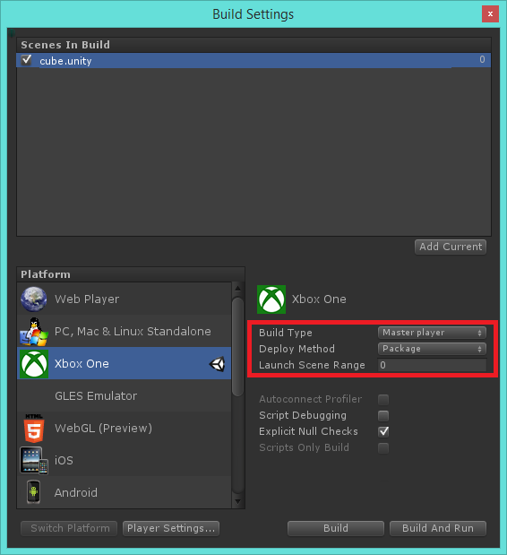
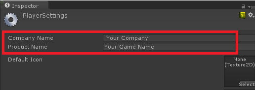
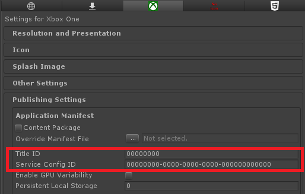
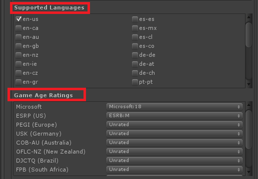
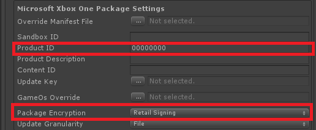

Packaging
Applications on the Xbox One are built and installed onto the console as packages. During development, you have the option to keep your game as loose files for push and pull deployment, but you will build a package for the release version you send to Microsoft for certification.
Building a Package
The project is built as a package when you select the Package build type in the Build Settings. Most of the Xbox One Player settings control the entries in the appxmanifest.xml file or the command line options used for the XDK's makepkge.exe tool. Both of these are used to create the package, and are described in detail in the XDK documentation.
To get the player into your game faster and thus improve their overall experience, you are strongly encouraged to build your game in a way that allows the player to enter your game without the full data set being present on his console. See the Streaming Installation and Chunks section on the page for more details.
There is usually a direct correlation between the makepkg.exe command line options and the options you find in this section. You can run makepkg.exe pack to get descriptions on these options from the tool itself.
Differences From Loose Deployment
There are unique features of a package that can make a big difference when compared to pull or push deployment. Push and pull deployment is very handy when you're quickly iterating on your game, but it is strongly recommended to test your game when built as a package to ensure the differences to not cause bugs in your game.
These features are explained in more detail in the XDK Documentation.
Read-Only Installation Drive
The drive that your game's files are installed on, the G:\ drive, is read-only when it is installed as a package so you cannot write any files to it. There are separate drives that you can write to, but they are not suitable for persistent data, like saved game state or configuration settings.
The Xbox One provides several storage options, and you can read more about them in the XDK documentation's *System > Overviews > Storage Overviews * section. Unity's Xbox One Native Plugins provide APIs that let you use some of the different types of storage available to you.
Streaming Installation and Chunks
When built as a package, your game's files are separated into chunks which can be downloaded to the console individually. This lets a player run your game while parts of it are downloading in the background. The chunks are build according to a Package Manifest which is described later on on this page.
You must make sure that the players cannot access parts of your game that are not downloaded yet. Depending on the size of your game, you may need to leverage this background downloading in order to pass certification. Unity's Xbox One Native Plugins include a StreamingInstall library that has an API to help you with this. There are samples and documentation along with it to get you started.
You can read more about Streaming Installation in the XDK whitepaper titled Title Packaging, Content Updates, and Streaming-Installation Testing.
Embedded OS
the game OS is embedded into your game, which is how your game can continue to run even after players update their console. This will make the size of a package different than the size of all the loose files that were used during loose deployment.
Encryption
A package is normally encrypted, which could affect performance and does have an impact on how long it takes to build your package. It's possible to turn encryption off in the 0Packaging Player settings, but it is recommended to use Devkit Compatible encryption during development.
Devkit Compatible Encryption is equivalent to not providing a command line option to makepkg. Unencrypted is equivalent to the lu command line option.
As you get ready to submit your final submission to cert you will need to turn on the /l option (Full Encryption). This is retail compatible encryption and is only required for final certification.
Package Manifest
A package manifest file is used to control how your game's files are separted into chunks for Streaming Installation. The XDK documentation section Test, Automation, and Publishing > Tools > Deployment Package Schema describes the format of that file, and the whitepaper titled Designing Title Package Layouts for Updates: Best Practices and Guidelines explains how to configure this file well.
Unity generates this manifest for you. When you build a package, it will exist within your output directory and named streamingInstallManifest.xml. The file has comments in it describing what each chunk includes and the logic Unity uses to decide what files go in which chunks. We encourage you to read this file and to reconfigure it to optimize your game's package layout. To override the default, use the Xbox One > Package Settings > Override Manifest File Player setting. You can use the file Unity created for you as a starting point, but remember to copy it out of the output directory and into a folder that can be accessed by Unity but not included in your game's data.
Proper Settings for Certification Submission
There are some Build Settings and Player settings that must be set or in a specific configuration when you build for certification submission to Microsoft. It's important to set all of these settings properly, but here we will explain which settings are most important for certification.
Depending on your project, there may be additional requirements needed to pass certification, such as setting the correct Capabilities and specifying the correct Configured Sockets. These is only the bare minimum configuration that all projects will need.
Make a Clean Build
When you make an important build, like the one you will create for certification submission, you should follow these steps to make a clean build:
- Close Unity.
- Delete your project's Library folder.
- Open Unity.
- Refrain from making any modifications to the Assets, Scenes, or settings.
- Build your project.
You should follow these steps from the beginning every time you make a build for submission. If you follow these steps then make another build without performing through steps 1-4 a second time, you risk creating large binary diffs.
Doing this will make sure that your project has the fewest binary diffs if you need to make a title update later on. This is not a strict requirement or a setting, but a very important step to ensure you have the smallest possible patch size.
Build Settings

You must build your game as a package, and you must use the Master Build Type. It's also important to take care in deciding your launch range. There are certification requirements on the size of your launch range that you must adhere to.
Company and Product Names

These settings are given values by default, but you must give them unique names. These are used to uniquely identify the package, and you cannot use the same names as another package.
Titile ID and Service Configuration ID (SCID)

These are IDs given to you by Microsoft. You can find them on XDP after you have created and published a product. Please see the XDK documentation for more details on that process. The Sandbox Survival Kit white paper may particularly useful along with documention on XDP, Microsoft's web service for configuring content.
Languages and Ratings

You must set at least one language. The "en-us" value is set by default.
There are no default Ratings set, and you don't have to have set all of them. You must have proper values given to you by the ratings institutions of the respective regions you will be releasing your game to.
Package Settings

The Product ID is not strictly necessary, but without it you won't be able to add DLC to your game. This ID is how DLC packages know which products can use them. This is an ID given to you by Microsoft.
The package must be encrypted in a particular way. The Retail Signing option for the Encryption setting will have it encrypted correctly.
Sandbox ID is for internal development security purposes only and is not applicable for cert. This will lock your game to run only within a specific sandbox.